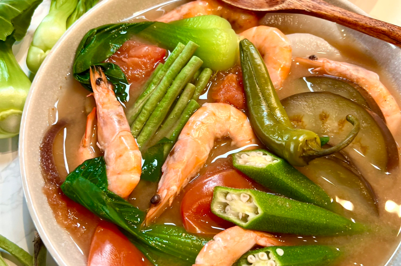

Sinigang na Hipon (Shrimp in Sour Tamarind Soup)

Description
Sinigang na hipon delights with plump shrimp simmered in a tangy broth of tamarind, tomatoes, and vegetables, creating a
comforting Filipino classic known for its vibrant flavors. Perfect for chilly evenings or casual gatherings, it's a
hearty soup that balances sourness with savory depth, sure to warm both body and soul.
Ingredients
- 250 grams large shrimp, deveined with shells intact
- 1 medium onion, quartered
- 2 medium tomatoes, quartered
- 1 radish, sliced thinly
- 1 bunch water spinach (kangkong) or spinach, cut into 2-inch pieces
- 2 long green chili peppers (siling pangsigang)
- 6-8 pieces okra, ends trimmed
- 1 small eggplant, sliced into rounds
- 6 cups water
- 2 tbsp tamarind paste or 1 packet of sinigang mix (adjust to taste)
- 1 tbsp fish sauce (patis)
- Salt and pepper to taste
Steps
- Prepare the Broth:
- In a large pot, bring water to a boil.
- Add the onion and tomatoes. Boil for about 5 minutes until the tomatoes are soft.
- Add Vegetables:
- Add the radish, eggplant, and okra to the pot. Continue to cook for another 5 minutes or until the vegetables are
tender.
- Season the Broth:
- Add the tamarind paste or sinigang mix, stirring well to dissolve.
- Season with fish sauce, salt, and pepper to taste.
- Cook the Shrimp:
- Add the shrimp and green chili peppers to the pot. Cook for about 3-5 minutes, or until the shrimp turn pink and opaque.
- Add Greens:
- Add the water spinach or spinach to the pot. Cook for an additional 1-2 minutes until the greens are wilted.
- Final Adjustments:
- Taste the soup and adjust the seasoning with more fish sauce, salt, or tamarind paste if needed.
- Serve:
- Ladle the hot sinigang into bowls, ensuring each serving gets a good mix of shrimp and vegetables.
- Serve with steamed rice and enjoy this comforting, tangy Filipino dish.